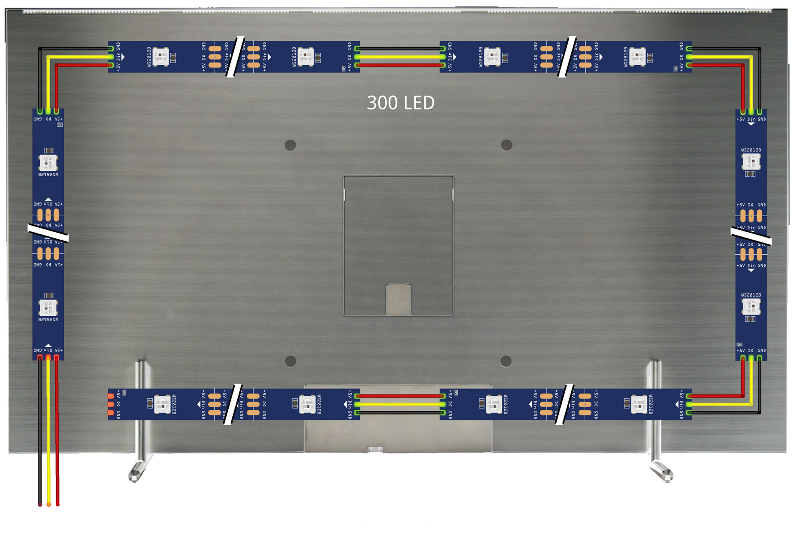
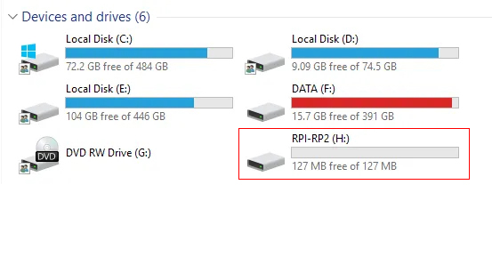
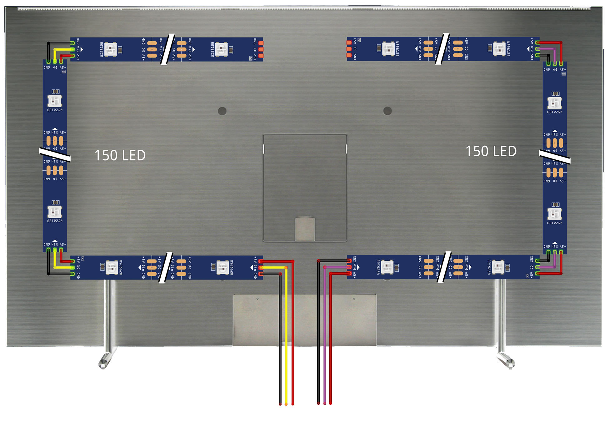
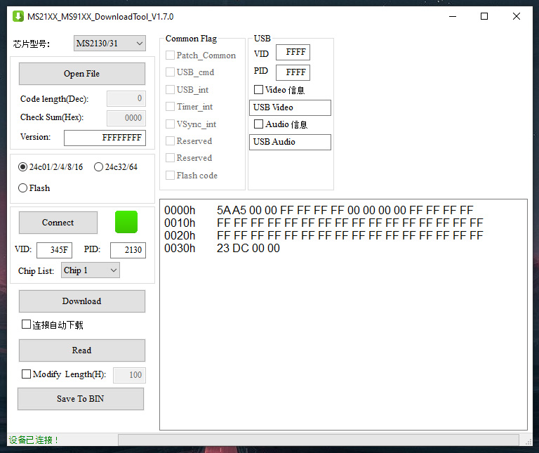
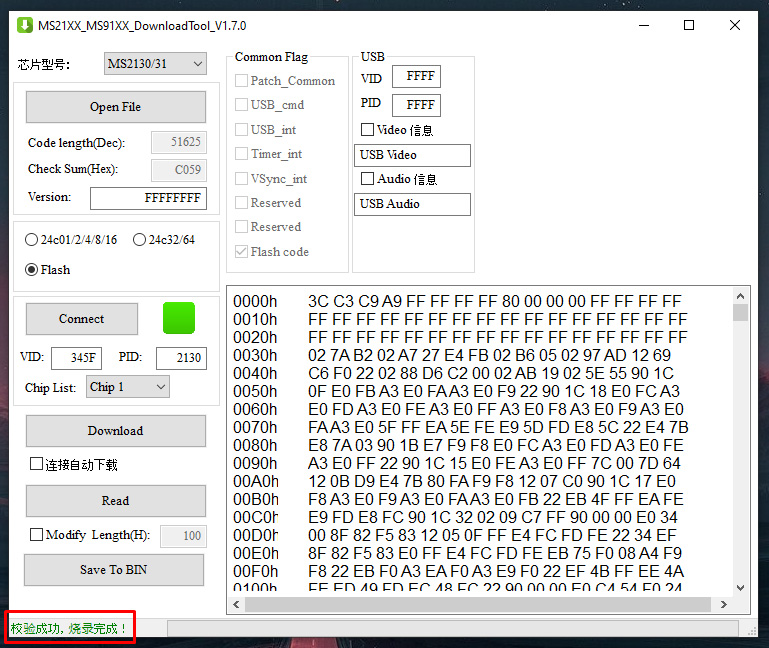

Open the HyperSPI developer repository, we need the release versions page
(link).
Download the current driver depending on the board used (Rp2040 / ESP32 / Esp8266) and the type of LED strip.
P.S.: In most cases, if you have a classic arrangement of the LED strip on the TV body (starts at one of the lower corners, runs along the perimeter of the body and ends in the same corner where it began) and the tape has 300 LED's (5 meters with a density of 60/m), then standard firmware will be sufficient.

If you use the Rp2040 board and WS2812B LED strip, you must use the following firmware accordingly:
HyperSPI_Pico_ws2812.uf2
We connect the Rp2040 board to the computer using a Type-C cable.
Next, you need to put the Pico board into DFU mode, to do this, press and hold the "boot" and "reset" buttons, then
release the "reset" button then release the "boot" button. In the system file manager you should find a new disk with
name "RPI-RP2"

Drag (or copy) the previously downloaded firmware to this disk.
Pico will automatically reset after booting and within seconds it will be ready for use with HyperHDR.
In my case, a multi-segment mode is used, which allows us to halve the delay when transmitting data about LED color via Neopixel data line (800 kHz). The tape does not consist of the usual one strip, but of two equal segments with an equal number of diodes (for example, we have a 5 meter tape with a density of 60/m, the total the number of diodes is 300 units, in this case we need to divide the whole tape into two sections of 150 diodes each).

The first section of the tape starts in the center of the bottom of the TV case and reaches the center of the top panel, it is laid clockwise. The second section is laid in the opposite direction towards the first section, counterclockwise arrows (note the white arrows on the LED strip indicating the direction).
To activate the multi-segment mode, you need to edit the firmware, an example is described on the page
(link).
You need to edit the following lines in the file "HyperSPI / rp2040 / CMakeLists.txt":
# Use multi-segment, starting index of second led strip or OFF to disable
set(SECOND_SEGMENT_INDEX 150)
# If multi-segment is used and it's reversed, set this option to ON to enable reversing
set(SECOND_SEGMENT_REVERSED ON)
The index starts from zero.
The first segment is [0..149] => 150 LED's
The second segment is [150..299] => 150 LED's
We register 300 LED's in the HyperHDR configuration, for which it is a single strip.
From this post by the author of HyperHDR, download the current version of the modified firmware
(link).
This message contains links to download the utility for flashing our device, download it
(link).
Open the downloaded program, connect the capture card to the computer.
In the window after connecting the device you should see a green square (previously it was red before connecting).

Click on the "Read" button, then "Save to BIN".
We save the read file with the extension *bin; at this stage we saved a backup copy of the original firmware.
Now let’s download the modified firmware and unpack the file with the *bin extension from the *zip archive.
In the program window, click the "Open File" button, indicate the path to our file, and click "Download".
We are waiting for the process to complete; in the lower corner, after the download is complete, we will see a message about
successful firmware.

At this point, this stage of preparing the devices for further assembly is completed.